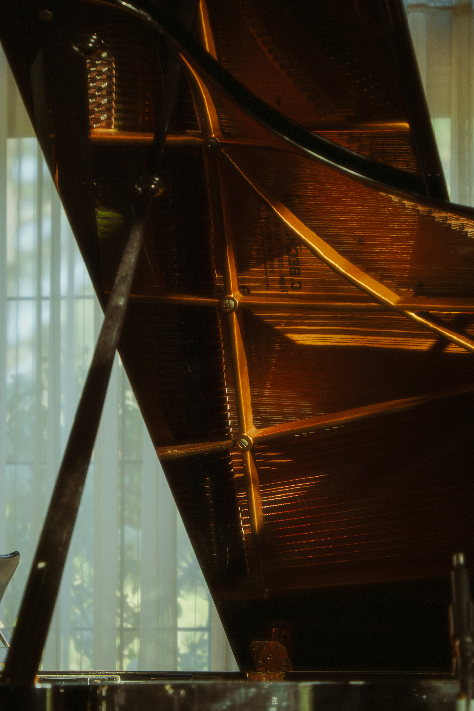
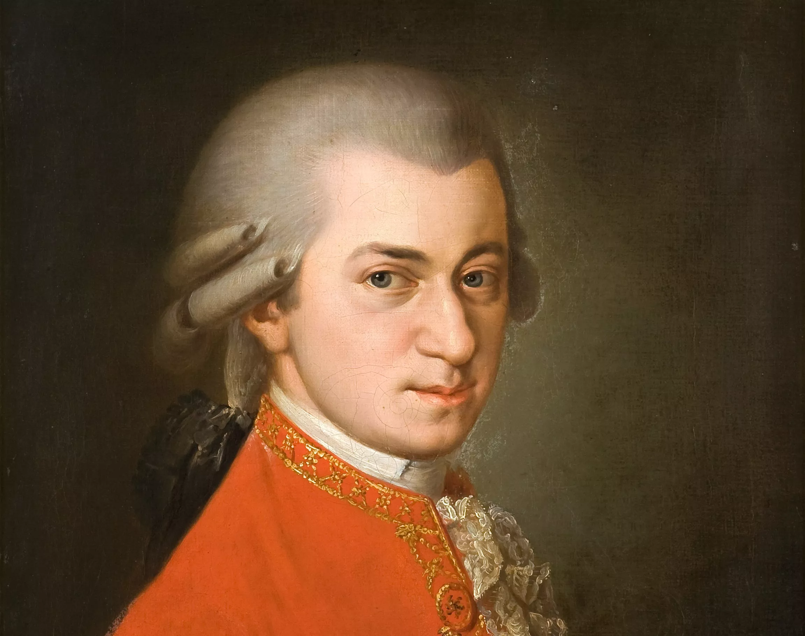
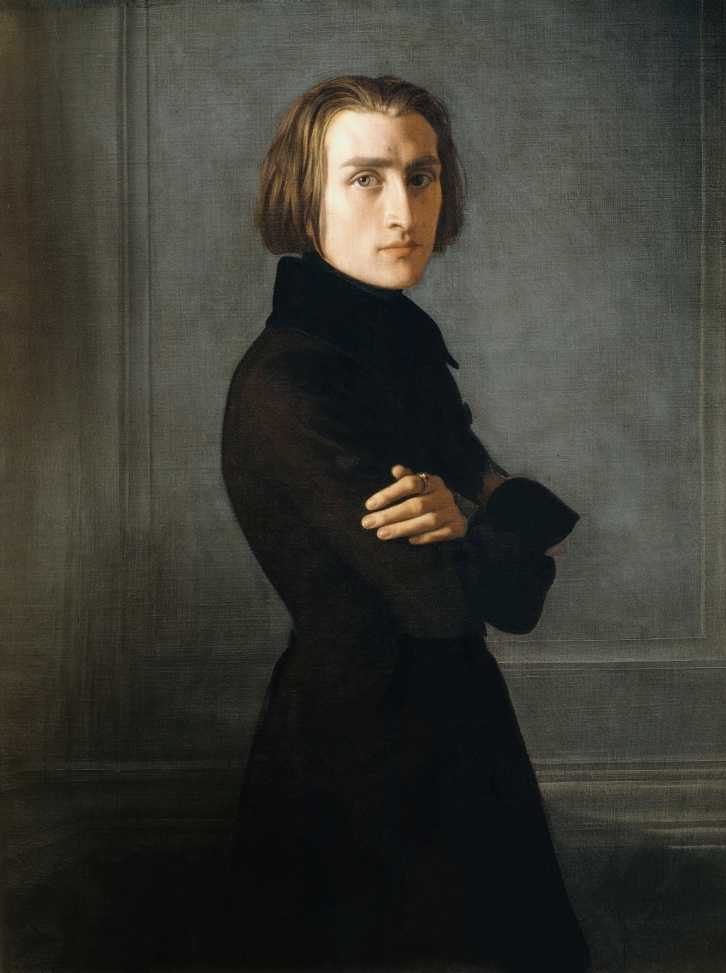
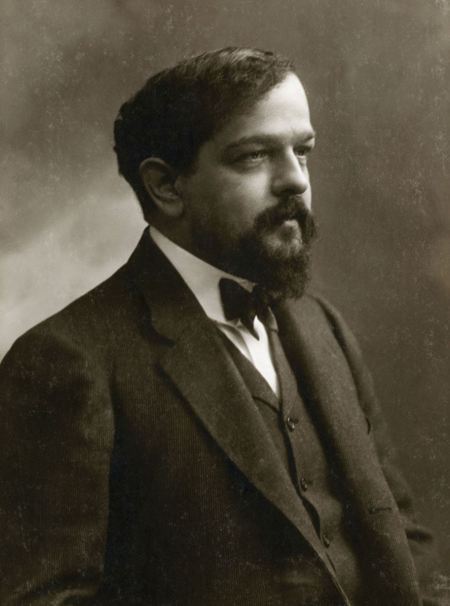
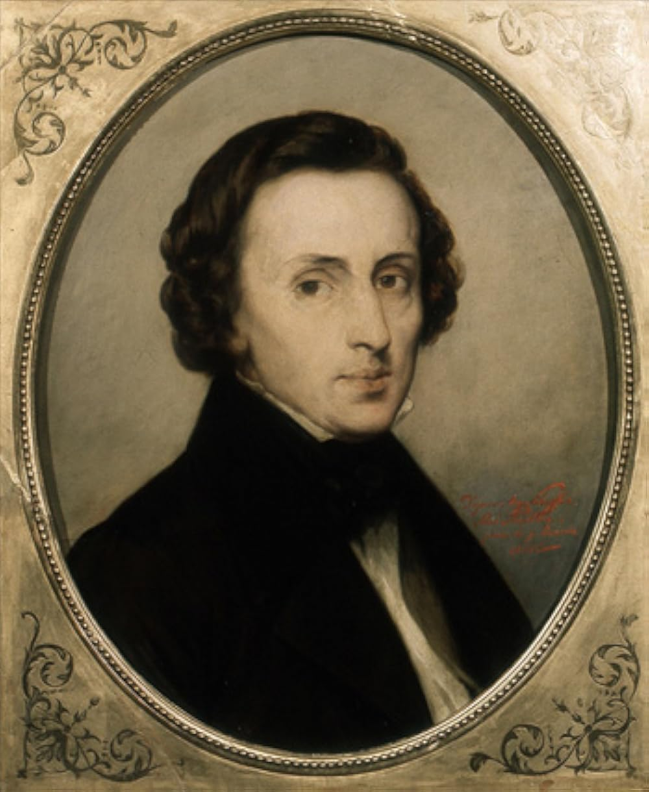

OPUS | Classical Music
Transforme a sua Prática Musical em Excelência
Transforme a sua Prática Musical em Excelência

A música clássica é uma tradição artística vasta que abrange mais de mil anos de história ocidental, fundamentada em sistemas complexos de notação musical, harmonia e forma. Diferente de gêneros populares que muitas vezes priorizam a repetição rítmica, a música clássica foca no desenvolvimento temático e na exploração de estruturas ricas, como sinfonias, sonatas e concertos.
Mais do que apenas um gênero, a música clássica é um testamento da capacidade humana de traduzir emoções complexas em sons organizados, servindo como a base para quase toda a teoria musical que conhecemos hoje.

Marcado pela complexidade e pelo uso intenso do contraponto. Artistas: Bach e Vivaldi

Busca pela clareza, equilíbrio e formas estruturadas. Artistas: Mozart e Haydn

Ênfase na expressão emocional e no individualismo. Artistas: Beethoven e Chopin

tradicional e experimentação rítmica. Artistas: Stravinsky e Debussy

Mestre do período Romântico e um dos compositores mais influentes da história da música clássica. Polonês de nascimento e radicado em Paris, sua música combina o vigor técnico com uma sensibilidade melódica incomparável. Entre suas criações mais célebres estão as Noturnos, Polonaises e a monumental Balada nº 1, obras que continuam a definir o ápice do repertório pianístico mundial.
A Balada nº 1 é um marco na história da música clássica por ter sido a primeira peça instrumental a receber o título de "Balada", um termo anteriormente reservado apenas à poesia ou a canções com narrativa. Inspirada, segundo relatos da época, pelos poemas patrióticos de Adam Mickiewicz, a obra não segue uma estrutura rígida, mas sim uma jornada emocional dramática. A peça é famosa por sua introdução solene e pelo desenvolvimento de temas que variam entre a melancolia profunda e o virtuosismo técnico explosivo. Seu encerramento, uma coda extremamente rápida e exigente, é testamento da genialidade de Chopin e de sua busca por elevar o piano a novos limites de expressão. Obra que simboliza a perfeita união entre a estrutura clássica e a alma do romantismo.
Registre Seu Estudo